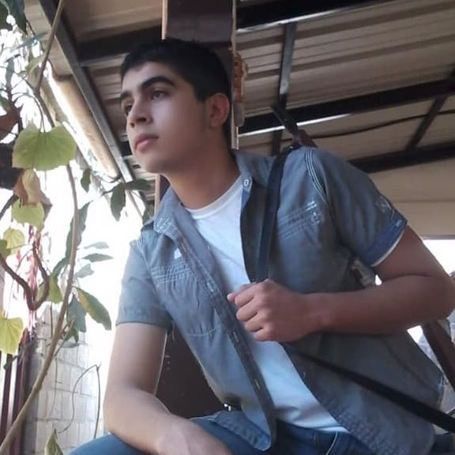

| Inicio | Mis habilidades | Mis Metas | Contactame |
| Quien soy yo? | |
|  | Soy un chico de 17 años que estudia en el Instituto Marista La Inmaculada Vivo en el municipio de Comayagua, En el departamento de comayagua, en el pais de Honduras Mis dos padres son hondureños. Mi padre nacido en san marcos de colon pero criado en comayagua. mi madre nacida y criada en lajas. Yo naci y me crie en comayagua. e vivido casi mis 17 años ahi. Pero e tenido las oportunidades de salir del pais y conocer fragmento diminuto del mundo en el que habitamos. En estatura fisica me podria considerar alguien de estatura promedia. Tono de piel tirando a blanca. contextura fornida y mi rostro tiene rasgos europeo de los que se cree que herede de mi visabuelo. Soy alguien que puede llegar a ser diferente cada dia. tiendo a comportarme de diferente manera. si tengo emociones positivas tiendo a ser cariñoso cercano . a dar una sensacion de calides pero si tengo emociones fria me vuelvo solitario, y a dar una sensacion de frialdad. Soy alguien que la musica es muy influyente en su estado de animo. Y por eso cuando hago tareas o estoy desanimado o triste . esucho musica alegre para intentar compensar la presion . el estres y otros sentimeintos He tenido una cierta habilidad artistica desde pequeño la cual e intendado ir desarrillando con el pasar de mi vida. la cual digamos que no le gustaba mucho a mi madre por el relajo que hacia y que aun hago. Y tampoco a mi padre por que gastaba muchos materiales y cuando los ocupaba para algo mas importante no los tenia. |